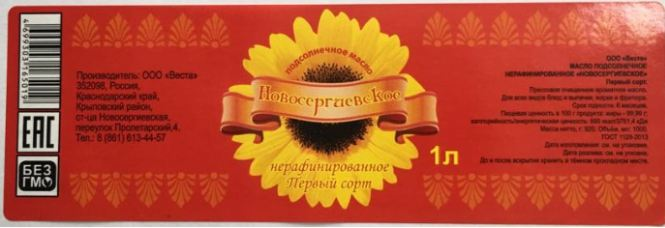
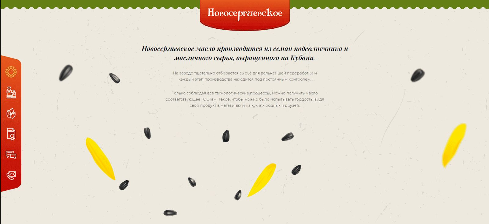

О проекте
Клиент
Завод по переработке семян подсолнуха, производитель подсолнечного масла «Новосергиевское». Продукт соответствует ГОСТ, полностью натуральный — в Краснодарском крае с подсолнухами полный порядок. А как пахнет! Для салата идеально.
Масло получают с помощью отжима семян, после него остаётся подсолнечный жмых, очень ценный корм для крупного рогатого скота и свиней, богатый белком и клетчаткой. Он, естественно, тоже реализуется.
Посмотреть на цены и задать вопросы вы можете на https://новосергиевское.рф
Задачи
Сделать одностраничный сайт, продемонстрировать на нём подсолнечное масло «Новосергиевское», его качество и преимущества, рассказать о других продуктах и контактах завода.
Дизайн
Завод расположен в станице Новосергиевская, среди бескрайних полей. В результате семечка не только крупная и маслянистая, как ей и положено под кубанским солнцем в плодородной земле, но и очень свежая. Чтобы создать ощущение этого поля, мы использовали зеленый и серо-бежевый фон с текстурой.
Также у нас была этикетка для масла в бутылках, красная с жёлто-оранжевым цветком подсолнухам надписью «Новосергиевское».

Красный использовали для бокового меню, градиент спокойного желтого цвета для кликабельных элементов.
Фичи
Мы многое узнали от клиента о процессе производства масла. Он оказался интересным, но достаточно простым для понимания, так как масло натуральное, и никаких секретов нет, одни преимущества.
Как рассказать о процессе производства масла пользователю? Дизайнер с программистом придумали простую, но понятную анимацию этапов с использованием семян подсолнечника, масла, и текстовых комментариев.

На сайте представлены продукция завода и цены, сертификаты соответствия ГОСТ и свидетельство на товарный знак, отзывы о масле и возможность оставить свой, контакты и местоположение завода с формой обратной связи.
Результат
Адаптивный лендинг о масле «Новосергиевское» и его производстве с интересной анимацией и летним настроением.